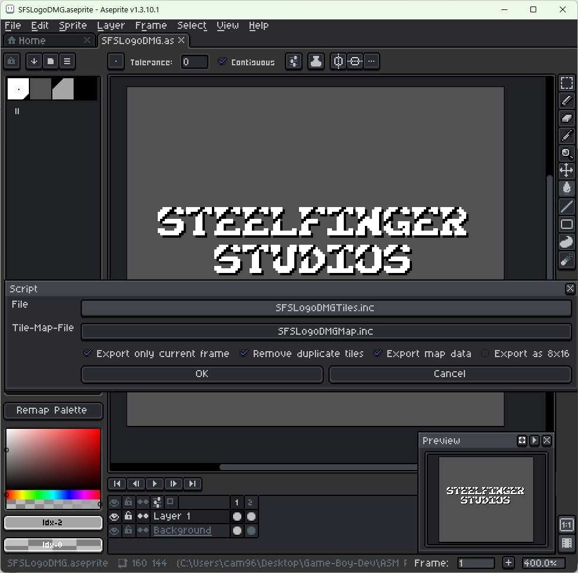
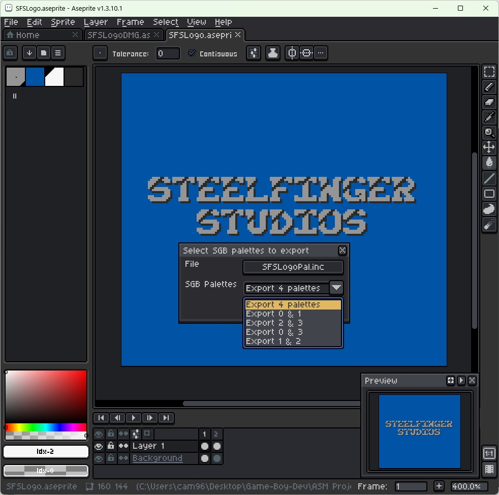
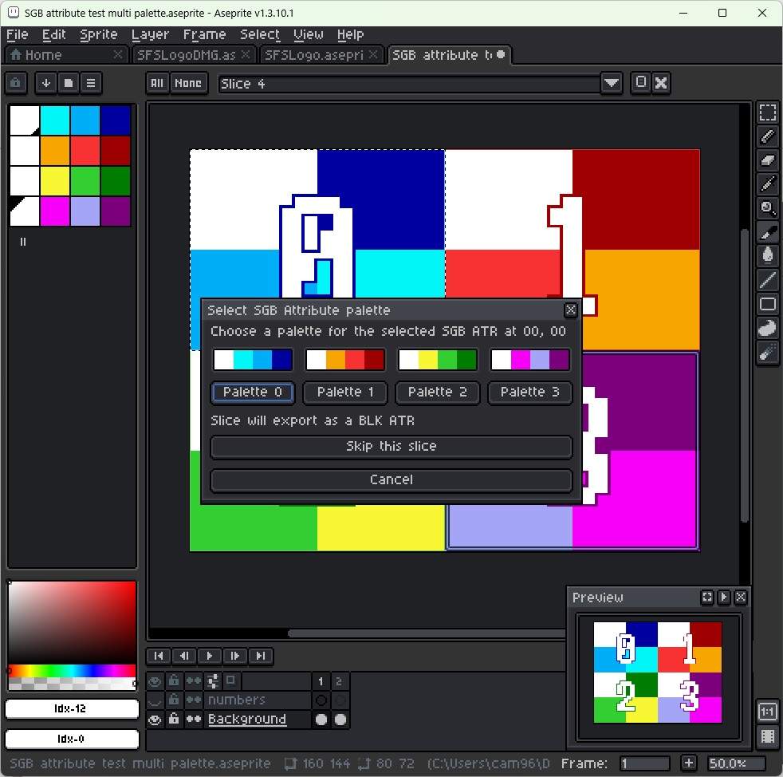

Game Boy Tile Converter/Compressor
Aseprite Tool • RLE Tile Compression • Game Boy

Turn Aseprite files into a run length encoding compressed .inc file
using Aseprite's scripting feature. This is a tool we designed specifically
for our Game Boy projects, and they wouldn't have been possible without it!
Download →
Super Game Boy Palette Exporter
Aseprite Tool • Palette Data Packets • Super Game Boy

Convert Aseprite palettes into Super Game Boy data packets for use
with creating custom SGB palettes for your Game Boy games. This is another one
that streamlines graphic development for Game Boy games, specifically those supporting the Super Game Boy.
Download →
Super Game Boy Attribute Exporter
Aseprite Tool • Attribute Packets • Super Game Boy

Super Game Boy Attributes give compatible games their ability to have more than 4 colors on screen at once.
This one pairs great with the Super Game Boy Palette Exporter for creating beautifully colorful scenes
on a system that only really supports 2-bit color!
Download →
Tonbow Font
Font • Downloadable • For use with any system

This is one of the fonts we designed for use in our games, named after our first official release. Tonbow
aims to be a fun font with a slightly thicker design and a notch cut out of the top left corner of each character.
Feel free to download it and use it to your heart's content, just make sure to credit us somewhere in your project!
Download →